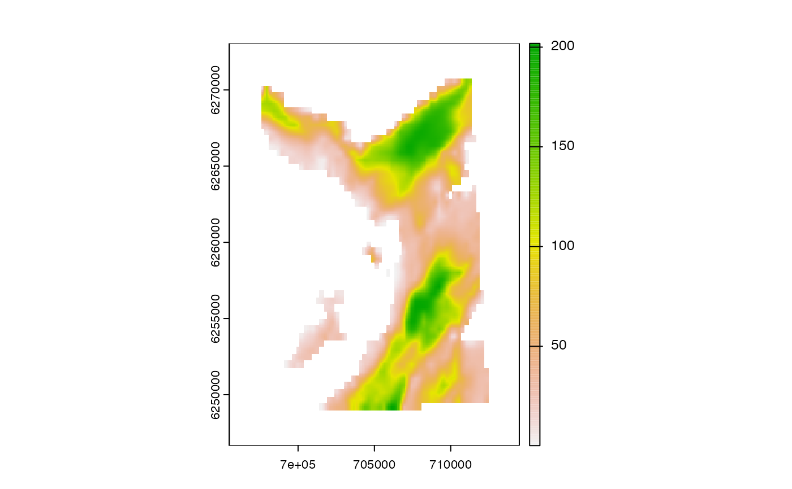
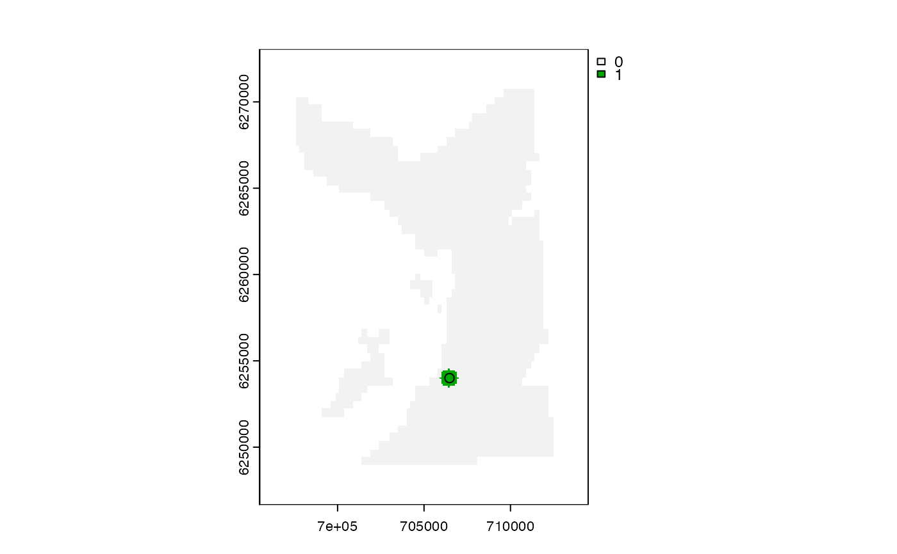
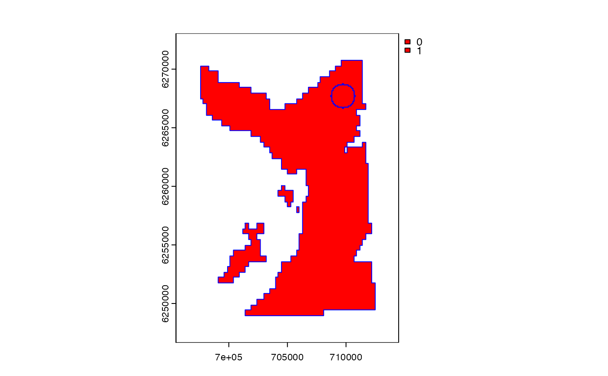

This function defines receiver detection containers.
acs_setup_detection_containers(.bathy, .moorings)This function is based on the acs_setup_containers function in the flappe`r package.
A SpatRaster that defines the grid over which the AC algorithms are implemented. NAs in this layer are used to mask detection containers.
A data.table that defines receiver locations and associated information (see dat_moorings for an example). At a minimum, this must contain receiver_id, receiver_easting, receiver_northing and receiver_range columns that define unique receiver deployments, receiver locations and (receiver-specific) detection ranges. Receiver IDs should be an integer vector.
The function returns a named list, with one element for each integer from 1:max(moorings$receiver_id). Any list elements that do not correspond to receivers contain a NULL element. List elements that correspond to receivers contain a SpatRaster that defines the detection container around that receiver.
Receiver detection containers are the regions within which an individual must be located, given a detection at a receiver. This function defines detection containers simply as a circular buffer (of distance .moorings$receiver_range) around receivers, masked by .bathy (e.g., land). Receiver detection containers are used to determine receiver overlaps (via acs_setup_detection_overlaps()), which are used in the AC* algorithms in detection probability calculations.
#### Example (1): Use constant receiver detection ranges
# Define grid
grid <- dat_gebco()
terra::plot(grid)

# Define receiver detection ranges
dat_moorings$receiver_range <- 500
# Define detection containers
containers <- acs_setup_detection_containers(grid, dat_moorings)
# Visualise an example container
terra::plot(containers[[dat_moorings$receiver_id[1]]])
points(dat_moorings$receiver_easting[1], dat_moorings$receiver_northing[1])

#### Example (2): Use receiver-specific detection ranges
dat_moorings$receiver_range[1] <- 100
dat_moorings$receiver_range[2] <- 1000
containers <- acs_setup_detection_containers(grid, dat_moorings)
terra::plot(containers[[dat_moorings$receiver_id[1]]], col = "red")
terra::lines(terra::as.polygons(containers[[dat_moorings$receiver_id[2]]]), col = "blue")
